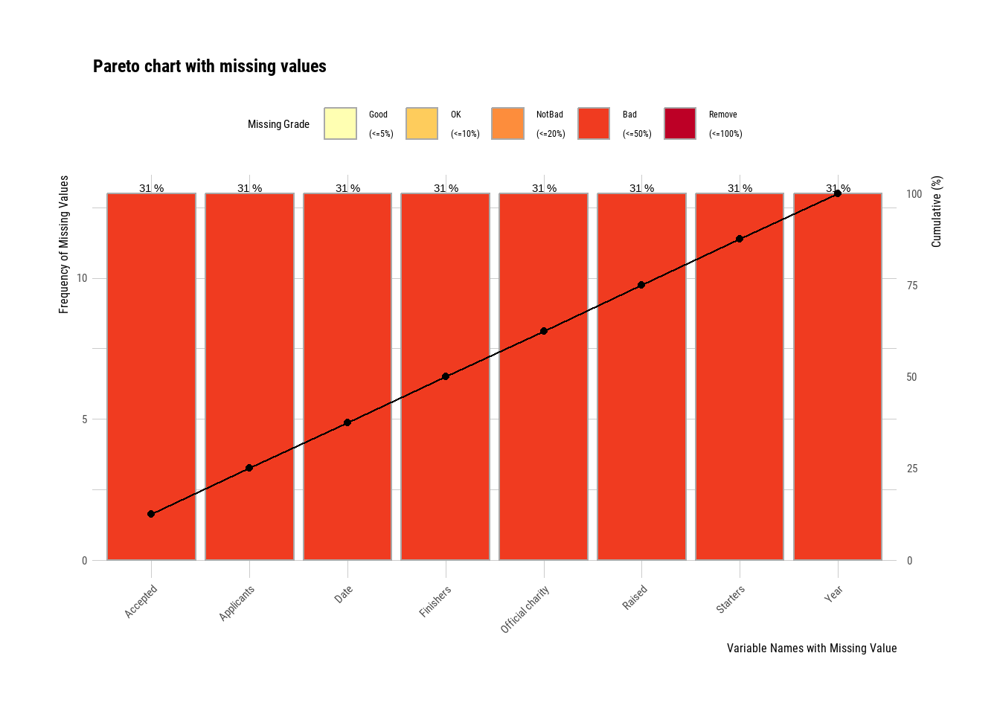

Quarto enables you to weave together content and executable code into a finished document. To learn more about Quarto see https://quarto.org.
Running Code
When you click the Render button a document will be generated that includes both content and the output of embedded code. You can embed code like this:
# Get the Data# Read in with tidytuesdayR package # Install from CRAN via: install.packages("tidytuesdayR")# This loads the readme and all the datasets for the week of interest# Either ISO-8601 date or year/week works!#tuesdata <- tidytuesdayR::tt_load('2023-04-25')#tuesdata <- tidytuesdayR::tt_load(2023, week = 17)#winners <- tuesdata$winners#london_marathon <- tuesdata$london_marathon# Or read in the data manuallywinners <- readr::read_csv('https://raw.githubusercontent.com/rfordatascience/tidytuesday/master/data/2023/2023-04-25/winners.csv')
Rows: 163 Columns: 5
── Column specification ────────────────────────────────────────────────────────
Delimiter: ","
chr (3): Category, Athlete, Nationality
dbl (1): Year
time (1): Time
ℹ Use `spec()` to retrieve the full column specification for this data.
ℹ Specify the column types or set `show_col_types = FALSE` to quiet this message.
Rows: 42 Columns: 8
── Column specification ────────────────────────────────────────────────────────
Delimiter: ","
chr (1): Official charity
dbl (6): Year, Applicants, Accepted, Starters, Finishers, Raised
date (1): Date
ℹ Use `spec()` to retrieve the full column specification for this data.
ℹ Specify the column types or set `show_col_types = FALSE` to quiet this message.
# Sets the repository to download packages fromoptions(repos =list(CRAN ="http://cran.rstudio.com/"))# Sets the number of significant figures to two - e.g., 0.01options(digits =2)# Required package for quick package downloading and loading install.packages("pacman")
Installing package into 'C:/Users/Rohit/AppData/Local/R/win-library/4.3'
(as 'lib' is unspecified)
package 'pacman' successfully unpacked and MD5 sums checked
The downloaded binary packages are in
C:\Users\Rohit\AppData\Local\Temp\RtmpW4VACo\downloaded_packages
# Downloads and load required packagespacman::p_load(dlookr, # Exploratory data analysis forecast, # Needed for Box-Cox transformations formattable, # HTML tables from R outputs here, # Standardizes paths to data kableExtra, # Alternative to formattable knitr, # Needed to write HTML reports missRanger, # To generate NAs tidyverse, # Powerful data wrangling package suite ggplot2) #plotting the graphs
london_marathon$Applicants[is.na(london_marathon$Applicants)]<-0london_marathon$Accepted[is.na(london_marathon$Accepted)]<-0london_marathon$Starters[is.na(london_marathon$Starters)]<-0london_marathon$Finishers[is.na(london_marathon$Finishers)]<-0london_marathon$Raised[is.na(london_marathon$Raised)]<-0london_marathon$`Official charity`[is.na(london_marathon$`Official charity`)]<-"None"# Generate a color palettecolors <-rainbow(50)view(london_marathon)olympic_colors <-c("#009EDB", "#F4C300", "#000000", "#009E49", "#EF3340")n_colors <-length(olympic_colors)color_gradient <-colorRampPalette(olympic_colors)(42)ggplot(london_marathon, aes(x = Year, y = Applicants, fill=factor(Year) )) +geom_bar(stat ="identity", position =position_dodge(width =7))+scale_x_continuous(name ="Year",breaks=seq(1981,2022,1))+scale_y_continuous(labels = scales::comma_format(scale =1e-1))+scale_fill_manual(values = color_gradient)+theme(axis.text.x =element_text(angle =45, hjust=1),legend.position ="none")
# Sets the number of significant figures to two - e.g., 0.01options(digits =2)# Required package for quick package downloading and loading if (!require(pacman))install.packages("pacman")
Loading required package: pacman
pacman::p_load(colorblindr, # Colorblind friendly pallettes cluster, # K cluster analyses dlookr, # Exploratory data analysis formattable, # HTML tables from R outputs ggfortify, # Plotting tools for stats ggpubr, # Publishable ggplots here, # Standardizes paths to data kableExtra, # Alternative to formattable knitr, # Needed to write HTML reports missRanger, # To generate NAs plotly, # Visualization package rattle, # Decision tree visualization rpart, # rpart algorithm tidyverse, # Powerful data wrangling package suite visdat, patchwork) # Another EDA visualization package# Set global ggplot() theme# Theme pub_clean() from the ggpubr package with base text size = 16theme_set(theme_pubclean(base_size =16)) # All axes titles to their respective far right sidestheme_update(axis.title =element_text(hjust =1))# Remove axes tickstheme_update(axis.ticks =element_blank()) # Remove legend keytheme_update(legend.key =element_blank())
# A tibble: 6 × 8
Date Year Applicants Accepted Starters Finishers Raised
<date> <dbl> <dbl> <dbl> <dbl> <dbl> <dbl>
1 1981-03-29 1981 20000 7747 7055 6255 0
2 1982-05-09 1982 90000 18059 16350 15116 0
3 1983-04-17 1983 60000 19735 16500 15793 NA
4 1984-05-13 1984 70000 21142 NA 15675 NA
5 1985-04-21 1985 83000 NA 17500 NA 0
6 1986-04-20 1986 80000 NA NA NA 0
# ℹ 1 more variable: `Official charity` <chr>
# Create the NA tablena.london_marathon |>plot_na_pareto(only_na =TRUE, plot =FALSE)
# A tibble: 8 × 5
variable frequencies ratio grade cumulative
<fct> <int> <dbl> <fct> <dbl>
1 Accepted 13 0.310 Bad 12.5
2 Applicants 13 0.310 Bad 25
3 Date 13 0.310 Bad 37.5
4 Finishers 13 0.310 Bad 50
5 Official charity 13 0.310 Bad 62.5
6 Raised 13 0.310 Bad 75
7 Starters 13 0.310 Bad 87.5
8 Year 13 0.310 Bad 100
# Plot the intersect of the columns with missing values# This plot visualizes the table abovena.london_marathon |>plot_na_pareto(only_na =TRUE)

Advanced Exploration of Missing Values
# Plot the intersect of the 5 columns with the most missing values# This means that some combinations of columns have missing values in the same rowna.london_marathon|>select(Applicants, Accepted, Starters, Finishers, Raised) |>plot_na_intersect(only_na =TRUE)
Determining if NA Observations are the same
# Interactive plotly() plot of all NA values to examine every rowna.london_marathon |>select(Applicants, Accepted, Starters, Finishers, Raised) |>vis_miss() |>ggplotly()
# Raw summary, output suppressedrpart_na_imp_insulin <- london_temp |>imputate_na(Applicants, method ="rpart")# Plot showing the results of our imputationrpart_na_imp_insulin |>plot()
Produce an HTML Transformation Summary
#transformation_web_report(london)
Correlating like a Data Master
if (!require(pacman))install.packages("pacman")pacman::p_load(colorblindr, dlookr, formattable, GGally, ggdist, ggpubr, ggridges, here, tidyverse)# Set global ggplot() theme# Theme pub_clean() from the ggpubr package with base text size = 16theme_set(theme_pubclean(base_size =12)) # All axes titles to their respective far right sidestheme_update(axis.title =element_text(hjust =1))# Remove axes tickstheme_update(axis.ticks =element_blank()) # Remove legend keytheme_update(legend.key =element_blank())
# A tibble: 30 × 3
var1 var2 coef_corr
<fct> <fct> <dbl>
1 Applicants Year 0.591
2 Accepted Year 0.320
3 Starters Year 0.300
4 Finishers Year 0.332
5 Raised Year 0.652
6 Year Applicants 0.591
7 Accepted Applicants 0.350
8 Starters Applicants 0.368
9 Finishers Applicants 0.380
10 Raised Applicants 0.624
# ℹ 20 more rows
london_marathon |>plot_correlate()
Visualize Correlations within Groups
Describe and Visualize Relationships Based on Target Variables
# First, we need to remove NAs, they cause an error#winner.noNA <- winners |> # drop_na()## The numerical predictor variable that we want#num <- target_by(winner.noNA , Sap_Flow)# Relating the variable of interest to the numerical target variable#num_num <- relate(num, pLWP)# Summary of the regression analysis - the same as the summary from lm(Formula)#summary( num_num )
Numerical Target Variables: Numerical Variable of Interest
# First, we need to remove NAs, they cause an errordataset.noNA <- london_marathon |>drop_na()# The numerical predictor variable that we wantnum <-target_by(dataset.noNA, Starters)# Relating the variable of interest to the numerical target variablenum_num <-relate(num, Finishers)# Summary of the regression analysis - the same as the summary from lm(Formula)summary(num_num)
Call:
lm(formula = formula_str, data = data)
Residuals:
Min 1Q Median 3Q Max
-919.6 -301.2 -78.4 230.8 1135.2
Coefficients:
Estimate Std. Error t value Pr(>|t|)
(Intercept) 919.625 202.770 4.54 5.1e-05 ***
Finishers 0.992 0.007 141.68 < 2e-16 ***
---
Signif. codes: 0 '***' 0.001 '**' 0.01 '*' 0.05 '.' 0.1 ' ' 1
Residual standard error: 497 on 40 degrees of freedom
Multiple R-squared: 0.998, Adjusted R-squared: 0.998
F-statistic: 2.01e+04 on 1 and 40 DF, p-value: <2e-16
# Plotting the linear relationshipplot(num_num)
Numerical Target Variables: Categorical Variable of Interest
# The categorical predictor variable that we wantnum <-target_by(winners, Category)
Warning in target_by_impl(.data, vars): The target variable was assigned a
character type.
# We need to change Group to a factornum$Group <-as.factor(num$Category)# Relating the variable of interest to the numerical target variablenum_cat <-relate(num, Year)# Summary of the ANOVA analysis - the same as the summary from anova(lm(Formula))summary(num_cat)
described_variables Category n na
Length:5 Length:5 Min. : 39 Min. :0
Class :character Class :character 1st Qu.: 39 1st Qu.:0
Mode :character Mode :character Median : 42 Median :0
Mean : 65 Mean :0
3rd Qu.: 43 3rd Qu.:0
Max. :163 Max. :0
mean sd se_mean IQR skewness
Min. :2001 Min. :11.4 Min. :0.93 Min. :19.0 Min. :-0.0057
1st Qu.:2002 1st Qu.:11.4 1st Qu.:1.83 1st Qu.:19.0 1st Qu.: 0.0000
Median :2002 Median :11.8 Median :1.83 Median :20.5 Median : 0.0000
Mean :2002 Mean :11.9 Mean :1.68 Mean :20.0 Mean : 0.0009
3rd Qu.:2002 3rd Qu.:12.3 3rd Qu.:1.89 3rd Qu.:20.5 3rd Qu.: 0.0000
Max. :2002 Max. :12.5 Max. :1.91 Max. :21.0 Max. : 0.0102
kurtosis p00 p01 p05 p10
Min. :-1.21 Min. :1981 Min. :1981 Min. :1982 Min. :1984
1st Qu.:-1.20 1st Qu.:1981 1st Qu.:1981 1st Qu.:1983 1st Qu.:1985
Median :-1.20 Median :1981 Median :1981 Median :1983 Median :1985
Mean :-1.20 Mean :1982 Mean :1982 Mean :1984 Mean :1986
3rd Qu.:-1.20 3rd Qu.:1983 3rd Qu.:1983 3rd Qu.:1985 3rd Qu.:1987
Max. :-1.19 Max. :1983 Max. :1983 Max. :1985 Max. :1987
p20 p25 p30 p40 p50
Min. :1988 Min. :1990 Min. :1993 Min. :1997 Min. :2001
1st Qu.:1989 1st Qu.:1991 1st Qu.:1993 1st Qu.:1997 1st Qu.:2002
Median :1989 Median :1992 Median :1994 Median :1998 Median :2002
Mean :1990 Mean :1992 Mean :1994 Mean :1998 Mean :2002
3rd Qu.:1991 3rd Qu.:1992 3rd Qu.:1994 3rd Qu.:1998 3rd Qu.:2002
Max. :1991 Max. :1992 Max. :1994 Max. :1998 Max. :2002
p60 p70 p75 p80 p90
Min. :2005 Min. :2009 Min. :2012 Min. :2013 Min. :2017
1st Qu.:2006 1st Qu.:2010 1st Qu.:2012 1st Qu.:2013 1st Qu.:2017
Median :2006 Median :2010 Median :2012 Median :2014 Median :2018
Mean :2006 Mean :2010 Mean :2012 Mean :2014 Mean :2018
3rd Qu.:2006 3rd Qu.:2010 3rd Qu.:2012 3rd Qu.:2014 3rd Qu.:2018
Max. :2006 Max. :2010 Max. :2012 Max. :2014 Max. :2018
p95 p99 p100
Min. :2019 Min. :2021 Min. :2021
1st Qu.:2019 1st Qu.:2021 1st Qu.:2021
Median :2020 Median :2021 Median :2022
Mean :2020 Mean :2021 Mean :2022
3rd Qu.:2020 3rd Qu.:2022 3rd Qu.:2022
Max. :2020 Max. :2022 Max. :2022